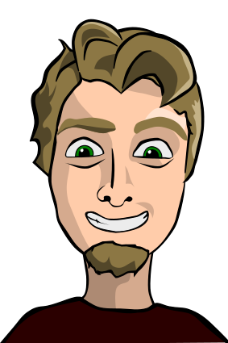
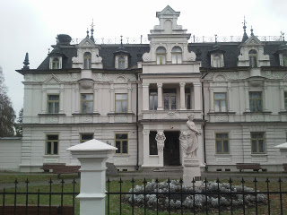
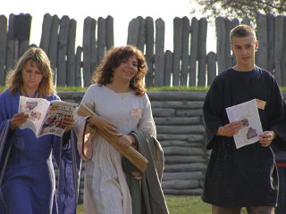
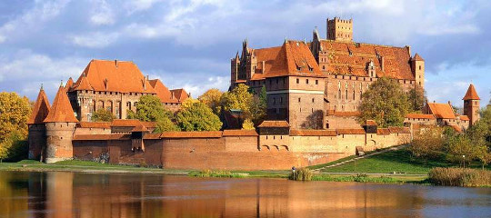
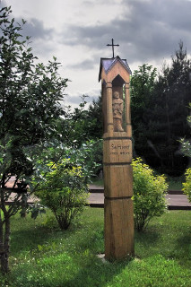
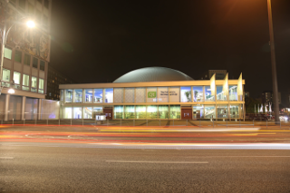

Welcome to Maciek's resumap! You can see here the journey of my life.
Sep 2005

Because math was easy to learn I filled spare time with drawings. I enjoyed it, so I decide to pick an art high school.
Sep 2006

During high school I visited a settlement in Biskupin and spent there 2 weeks as a woodcarver. Here I met my future wife.
Sep 2008

Source: visitmalbork.pl
Apr 2010

Source: suprasl.inecie.pl
May 2010
After high school I decided to move out to Łódź, where my girlfriend (currently wife) was studing in Art School.
Oct 2010
I picked studies in IT field, precisely Data Analysis faculty. I learn a lot of math, programming basics, game development and a lot of math.
Jun 2013
During studies, together with cauple of friends, I took part in game development contest. It was great fun and oppurnity to learn how to work with a team on bigger project. Work was interesting, colleges determined, so We won. You can check demo on YouTube:
Jun 2013
Have fun!
I started my programming career as Accenture intern and continued as programmer. It's escalated quickly because I was working with a big team on a large telecom billing system. I learn a lot and decided that I will pick C++ as my main programming language.
Feb 2015
After I gain some knowledge and skill in C++ I decided to move on and applied to Fujitu. Here I started from maintaining setup apps, but soon I received my own project. It was multiplatform app written in C++ with Qt libs. I had the opportunity to lead a small team and learn many interesting technologies.
Oct 2017

Source: blog.qt.io
After appling fix to Qt library I decided to take part in Qt contributors summit 2018 in Berlin. I was able to learn a lot abot Qt and generally C++. Additionally I had small talk with Lars Knoll.
Now
Now I'm continuing my programmer's journey. Still C++ is my favorite programming language, but I'm using many other technologies to develop my skills.
Inspired by Erin's Quinn post.
Fotograf portret Łódź